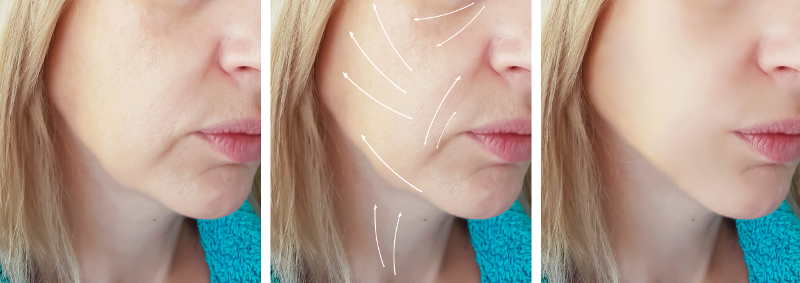

Lifting con Hilos Tensores
Qué son los Hilos Tensores o el Lifting con hilos?
Los hilos tensores están compuestos por polidioxanona (PDO). Se trata de un producto reabsorbible que es metabolizado por el organismo en unos 8 meses aproximadamente. Este fenómeno de reabsorción es una de las causas que produce resultados de rejuvenecimiento sobresalientes.
Los hilos de PDO se colocan debajo de la piel en diferentes planos. La PDO estimula la producción de nuevo colágeno, elastina y ácido hialurónico en los tejidos aplicados así como también la elevación de los mismos.
Existen 2 tipos de hilos: un grupo de hilos llamados "revitalizantes", que cuya principal función es promover la síntesis de colágeno, elastina y ácido hialurónico para lo cual se deben colocar varios hilos y otro grupo de hilos que tienen la capacidad de elevar los tejidos llamados "elevadores", para lo cual se colocan habitualmente una menor cantidad de hilos a cada lado, en posiciones estratégicas.
Los hilos elevadores producen una elevación delicada pero visible de la piel. El efecto es más sutil que en el caso de una cirugía.
Quiénes son candidatos para el Lifting con Hilos Tensores?
Es ideal para pacientes con escaso grado de flaccidez o laxitud cutánea y arrugas poco profundas que requieren cierta elevación de los tejidos. La cantidad máxima de elevación que se puede lograr con algunos hilos es de aproximadamente 1 cm. Si el paciente tiene una flaccidez más severa y requiere levantar más, entonces esta técnica puede no ser apropiada y estar formalmente indicado un lifting mediante cirugía. Los hilos tensores tampoco funcionan bien en aquellas personas con mucho sobrepeso o con piel muy gruesa.
Como todos los procedimientos estéticos, es fundamental que la persona tenga expectativas realistas.
Qué áreas se pueden tratar con Hilos Tensores?
La frente, las cejas, parpados inferiores, las mejillas o pómulos, el pliegue nasolabial, el reborde mandibular o la papada pueden ser áreas que mejoran mucho con este tratamiento.
Cuanto dura la acción de los Hilos Tensores?
La duración del efecto de este tratamiento puede variar entre las personas. Dura en promedio 1 año aunque en algunos casos puede durar más.
Qué ventajas tiene el tratamiento con Hilos Tensores?
Se trata de un procedimiento mínimamente invasivo, con escazas molestias, que no deja cicatrices y presenta una relativa rápida recuperación. También tiene un costo relativamente bajo costo en comparación con un lifting mediante cirugía.
Cómo se realiza el procedimiento?
El procedimiento se lleva a cabo bajo anestesia local y puede realizarse en un consultorio.
Los hilos se introducen mediante agujas en diferentes planos como debajo de la piel, en la grasa subcutánea o más profundo contra los músculos faciales.
Los hilos para levantar en general se colocan de 2 a 5 por lado, dependiendo de lo que se esté tratando.
Los hilos para revitalizar se colocan paralelos en mayor cantidad en el tejido subdérmico o subcutáneo.
Es completamente ambulatorio y la persona puede regresar inmediatamente a su casa.
Se pueden combinar los Hilos Tensores con otros tratamientos estéticos?
Si se pueden combinar con otros tratamientos mínimamente invasivos como la aplicación de toxina botulínica o relleno con ácido hialurónico.
Cuidados posteriores
La reacción al procedimiento produce enrojecimiento, inflamación y dolor leve que desaparece en unos pocos días.
Se recomienda usar compresas frías, evitar el ejercicio físico, dormir boca arriba y tener cuidado de no frotar demasiado la cara durante al menos una semana.
No se debe realizar masajes o tratamientos estéticos que liberen energía (como el laser) durante por lo menos varias semanas.